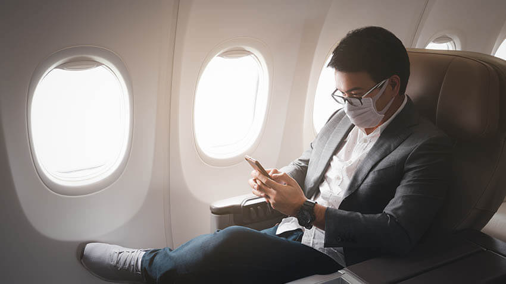

Places Most Impacted: REPLACE REPLACE
Almost every place on this planet we exist on have been impacted in some way by the pandemic we currently find ourselves in. Most hubs of large scale consumerism have been forced to shut their doors for the time being. Some of the most notable establishments that are struggling to keep their profit magins up are: Theme parks, namely Disney (and their various parks around the globe), shopping malls, and restaurants.

Saftey is a Priority: REPLACE REPLACE
Parnaz Hojjati from Michigan health reccomends if one is to travel despite the risks the pandemic places on tus there are a few things to gravitate towards. In their words, "if you do choose to travel this summer, Patel advises avoiding large groups of people. Instead, traveling with your household and keeping your circle small lowers your risk of infection and the chances of infecting others. This could come in the form of road tripping, short day trips, camping or any activities that involve minimal contact with others."